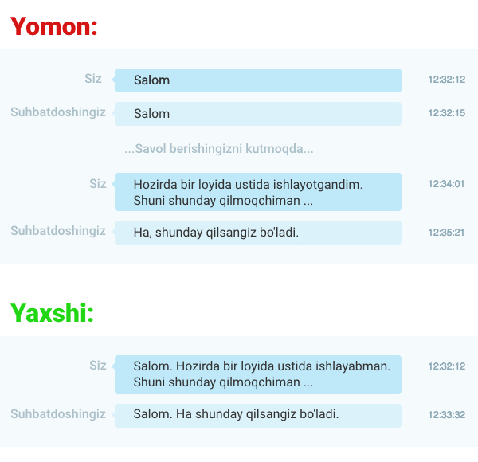

Iltimos, chatda meta-savollar bermang!
Meta-savol — bu boshqa savollarni nazarda tutuvchi savol, masalan:
— «Tushunarli, lekin bu savollarda nima yomonlik bor va nega men ularni so'ramasligim kerak?»
— Ular vaqtni behuda sarflashadi! Siz ham, sizga yordam berishga harakat qilayotgan boshqa odamlar ham! Siz odamlar bilan yuzma-yuz bo'lganingiz kabi, muammoingizga to'g'ridan-to'g'ri murojaat qilmasdan muloyim bo'lishga harakat qilasiz. Ammo bu suhbat butunlay boshqacha. Odamlar gapirgandan ko'ra sekinroq yozadilar. Xushmuomalalik ko'rsatish o'rniga, siz boshqa odamni savol shakllantirilishini kutishga majbur qilasiz, bu esa unumdorlikni yo'qotishiga olib keladi.
Xuddi shu narsa ushbu habarlarga ham tegishli: «Salom», «Assalomu alaykum», «Salom, kimdir bormi?», «Vaqtingiz bormi?», «Ping». Shunchaki savol bering!
Bundan tashqari, siz darhol savol berganingizda, "asinxron" - o'zaro ta'sir qilish imkoniyati ochiladi. Agar boshqa odam bo'lmasa va siz javob berishdan oldin ketsangiz, ular sizning "Salom" ga qarash va nima bo'lganini o'ylash o'rniga savolingizga javob berishlari mumkin.
Barchasi bir rasmda:
